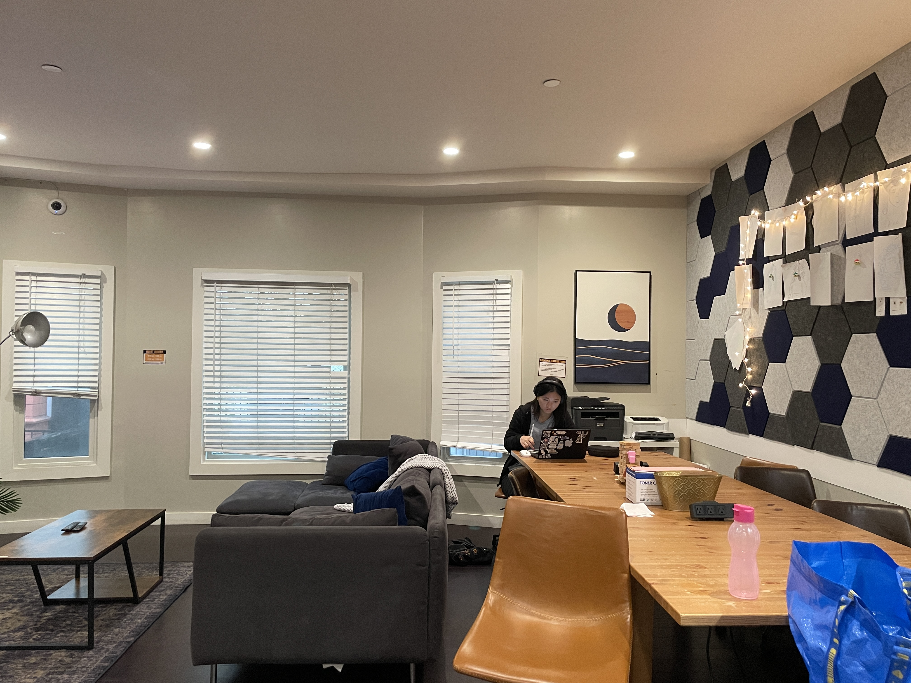

By Khoo An Xian
This project focuses on creating an image mosaic by computing homographies, using them to warp images, and compositing images together. We use manual feature matching in this part and visually select point correspondences across 2 images.The following pictures were taken by fixing the center of projection (COP) and rotating the camera. They feature (1) my living room, (2) my hike at Yellowstone, and (3) Wheeler Auditorium. They will each be stitched into a panorama!
|  | |
|
|
|
|
First, we will recover the parameters of the transformation between each pair of images. The transformation is a homography: p’=Hp,
where H is a 3x3 matrix with 8 degrees of freedom that transforms a point p in image 1 to p' in image 2.
In order to compute the entries in the matrix H, we set up a linear system using n=12 pairs of points p and p'.
These are correspondences, manually selected using matplotlib's ginput function.

Stacking n correspondences gives us a matrix equation Ah = b, where A is a 2nx8 matrix, b is a 2nx1 vector,
and h is [h11,h12,h13,h21,h22,h23,h31,h32^]T. From this matrix equation, we solve for h using least squares: h=((A^TA)^−1)(A^T)b
and convert it back to a 3x3 homography matrix H.
Now, we will implement warping using homographies. First, we predict the boundaries of the destination image by applying homography H on the 4 corners of the source image.
We then initialise the destination image grid. Next, we do inverse warping, where for each destination pixel (xd, yd), we compute the corresponding source coordinates
using (xs, ys) = H_inverse*[xd, yd, 1]^T. This avoids holes (the usual problem of forward-warp).
 |
 |

Nearest Neighbour (NN) VS Bilinear (BL) interpolation:
Quality wise, comparing the zoomed-in versions of NN and BL, we see that NN introduces jaggers/pixelated edges, while BL has less staircasing. This is because BL smooths and slightly blends values as it takes a weighted average of neighbouring pixels. However, in terms of speed, NN is faster as it involves just a rounding and fetch, while BN involves calculating weights, multiplication and addition on the pixel values of 4 neighbours. Overall, in the trade off between quality and speed, BN still is preferred as it still is relatively cheap and usually real-time for moderate image sizes. Visually, it also yields better results. We will use BN in our next panorama stitching stages.Finally, we will use all of the above to warp and combine 3 images create an image mosaic (panorama). The procedure is as follows:
Step 1: Compute homographies to reference frame Each adjacent image pair has manually chosen point correspondences. We compute pairwise homographies H1to2 and H2to3, each describing how to map image i to image i+1's coordinate frame. Next, we make homographies to express every image relative to image 2. We haveH1to2 = H1to2; H2to2 = np.eye(3); H3to2 = np.linalg.inv(H2to3)
Step 2: Find bounding box of final mosaic
Now we set a bounding box for our final mosaic by first seeing where all image corners land in the 2nd image's frame.
We take the 4 corners of all images and pass them through their homography Hxto2, and find the collective xmin, x mas, ymin and ymax that gives us the bounding box for all images.
The final panorama's width and height are W=⌈xmax−xmin⌉, H=⌈ymax−ymin⌉.
Then we build a small translation homography T that shifts everything by (-xmin, -ymin) so that the top left corner aligns with (0,0) to ensure all warped images fit in the canvas.
Step 3: Wrap each image onto canvas
The final homography for image x will be Hx = T @ Hxto2 . We wrap the image using bilinear interpolation im_warped, mask = warpImageBilinear(im, H_final, out_shape=(H, W)),
producing a warped image that fits in the bounding box and a binary mask indicating which pixels in the panorama are filled by the warped image (HxW).
We then convert the single-channel mask into three identical copies (H×W×3) — one per color channel.
Finally, we blend the images via weighted averaging. For each pixel, the warped image contributions are summed (num += im_warped * m3) and divided by the total number of overlapping images
(den += m3), yielding the average color value per pixel in the final mosaic.
Results below!
 |
 |
We observe that the final panorama for Wheeler appears slightly blurry. This is likely due to small movements of subjects between the shots, unlike the living room panorama, which remains relatively sharp. In part 3B, we will look at how to fix this by automating feature matching across images. Stay tuned!